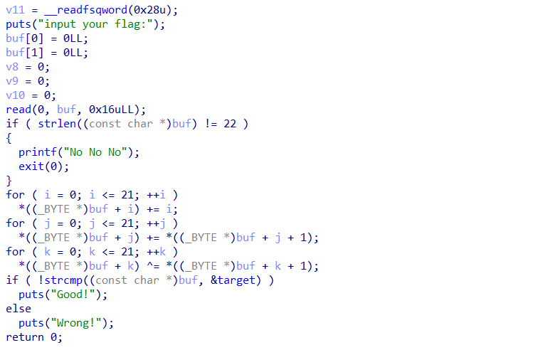

东北大学招新_re
elf文件，ida64打开，看到程序很简单的加密，但是涉及到数据类型之间的转化和经典的逆向过程

确定了输入的flag是22位，然后经过三轮运算，将得到的和给出的数组进行比较，逻辑简单，开始逆向！
思路：
1 | #首先将三轮运算逆向回去 |
这时得到的数组是
1 | targ=[-154, 365, -157, 362, -129, 374, -131, 364, -151, 385, |
这里很明显看到因为python的数据类型基本没有限制，所以会出现 很多大数和负数
在C语言里面，一个byte的无符号整数是0-255，这里看到程序里面都是单字节，所以会出现循环现象，这里将他门进行复原
1 | for i in range(22): |
最后得到flag：
flag{qweaxcdgsafdqwfd}